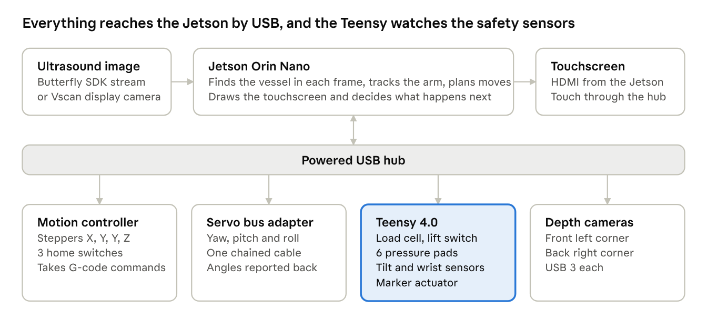

Wiring and Software
What plugs into what, and which piece of software talks over each cable.
This is the map of what plugs into what in the UltraVena rig, and which piece of software talks over each cable. It matches CAD model version 6 and the current parts list.
At a glance

controller map · Jetson, USB hub and four branches
The Jetson is the only thing that makes decisions. It talks to four things through one USB hub (the motion controller for the gantry, the servo adapter for the three tilt servos, the Teensy for the safety sensors, and the two depth cameras), and it never drives a motor or reads a sensor directly. The Teensy is highlighted because it is the one part that has to keep working even when the Jetson is busy or has crashed.
Power wiring

power tree · wall to every load
One 24 V supply feeds a fuse block with three branches. Two of them are always on (the computer side), and the third passes through the emergency stop before it reaches anything that can move.
| Branch from the fuse block | Wire | Feeds | Peak draw at 24 V (estimate) | Fuse to fit |
|---|---|---|---|---|
| Computer 12 V | 18 gauge to the Pololu 4095 | Jetson barrel jack, then the LED strips (back strip first, jumpered to the left, right and front strips) | 1.6 A, about 35 W | 3 A |
| Logic 5 V | 18 gauge to the Pololu 4091 | Touchscreen power, USB hub power, and the phone charging pad on the Butterfly build | 1 A, about 20 W | 2 A |
| Motion, through the emergency stop | 18 gauge up to the stop button on the front panel and back to a small junction on the back wall | Motion controller at 24 V (about 60 W), the 12 V servo converter (about 97 W with all three servos stalled) and the 6 V converter for the marker actuator (about 3 W) | 6.7 A, about 160 W | 10 A |
The three add up to about 215 W at the loads, or roughly 245 W from the supply once converter losses are counted, against a 350 W rating.
Everything else takes its power from one of those. The Teensy, the servo bus adapter's logic, the motion controller's logic and both depth cameras are powered through their USB cables. The load cell amplifier, tilt sensor, wrist band sensor and pressure pads all run from the Teensy's 3.3 V pin. The three servos take 12 V down the same chained cable that carries their data.
Data and signal wiring
Every cable that carries information, grouped by the controller it lands on. The Butterfly and Vscan builds differ only in the last three rows.
| From | To | Cable | What travels on it |
|---|---|---|---|
| Jetson USB port | USB hub | USB 3 | Everything below that goes through the hub |
| Jetson HDMI port | Touchscreen | HDMI | The screen picture |
| USB hub | Touchscreen | USB | Finger taps |
| USB hub | Depth camera 1 (front left) | USB 3 | Depth and colour frames |
| USB hub | Depth camera 2 (back right) | USB 3 | Depth and colour frames |
| USB hub | Motion controller | USB | Move commands out, position and status back |
| USB hub | Servo bus adapter | USB | Target angles out, true angle, load and temperature back |
| USB hub | Teensy | USB | Sensor readings and alarms in, marker and threshold commands out |
| Motion controller, X driver | X stepper motor | 4-wire motor lead through the cable chain | Motor current |
| Motion controller, Y driver | Left Y stepper motor | 4-wire motor lead along the base | Motor current |
| Motion controller, spare (extruder) driver | Right Y stepper motor | 4-wire motor lead along the base | Motor current, mirrored from the left Y motor in firmware |
| Motion controller, Z driver | Z stepper motor | 4-wire motor lead through the cable chain | Motor current |
| Motion controller, X, Y and Z switch inputs | Three home switches | 2-wire leads | Closed or open, read once at startup to find zero |
| Servo bus adapter | Yaw servo, then pitch, then roll | One 3-wire servo cable chained from servo to servo | 12 V, ground and a single two-way data line |
| Teensy | Load cell amplifier on the head | 4-wire lead through the cable chain | 3.3 V, ground, clock and data |
| Load cell amplifier | Load cell | The load cell's own 4 fine wires, a few centimetres | The raw force signal |
| Teensy | Lift switch on the floating head | 2-wire lead through the cable chain | Closed normally, opens when the head starts to float |
| Teensy | Tilt sensor on the probe holder | 3-wire lead through the cable chain | 3.3 V, ground and one serial data line |
| Teensy | Wrist band socket on the arm rest | 3-wire lead along the base | 3.3 V, ground and one serial data line |
| Teensy | Six pressure pads under the arm | Six 2-wire leads along the base | A voltage that rises as the arm presses down |
| Teensy | Marker actuator | 1 signal wire, alongside the 6 V pair from the converter | A servo-style pulse that sets how far the tip extends |
| Butterfly probe | Phone on the front panel | The probe's own cable, through the slot in the slanted panel | The ultrasound data, into the Butterfly app |
| Phone (Butterfly build) | Jetson | Butterfly SDK stream, route to confirm with Butterfly | Live ultrasound frames |
| Vscan probe, then display unit camera (Vscan build) | Jetson camera connector | The probe's own cable to the display unit, then a ribbon cable from the camera in the light box | A video of the Vscan's screen |
The hub ends up with six of its seven ports used. Nine separate leads run through the cable chain to the moving parts (two motor leads, the X and Z home switches, the servo cable, and four leads to the head for the amplifier, lift switch, tilt sensor and marker), plus the probe's own cable which hangs free.
Teensy pin plan
This is a proposed assignment, chosen so that nothing shares a pin and two pins stay free. The Teensy is a 3.3 V board and none of its pins tolerate 5 V, so every sensor below is powered from its 3.3 V pin.
| Teensy pin | Connects to | Direction | Notes |
|---|---|---|---|
| USB | Hub | Both | Power and the link to the Jetson |
| 3.3 V and ground | Amplifier, tilt sensor, wrist band socket, pressure pads | Out | About 60 mA in total, well inside the pin's 250 mA |
| 0 (serial 1 receive) | Tilt sensor data | In | The sensor's simple serial mode, 100 readings a second |
| 7 (serial 2 receive) | Wrist band sensor data | In | Same mode, through the socket on the arm rest |
| 2 | Load cell amplifier data | In | |
| 3 | Load cell amplifier clock | Out | |
| 4 | Lift switch | In, with the internal pull-up | Wired so a broken wire reads the same as a lifted head |
| 5 | Marker actuator signal | Out | Servo-style pulse, 1 to 2 ms |
| 6 | Stop line to the motion controller | Out | Not in the CAD yet, see Safety wiring |
| 14 to 19 (analog 0 to 5) | Pressure pads 1 to 6 | In | Each pad sits between 3.3 V and its pin, with a 10 kΩ resistor from the pin to ground |
| 20 to 23 | Spare | Four analog-capable pins for later |
Safety wiring
There are three layers, and they are deliberately independent of each other.
-
The floating head. No wire at all. The head lifts on its rods if the probe is pushed up, so it can never press harder than its own weight (about 7 N by estimate).
-
The emergency stop. A hardware cut. Pressing it breaks the 24 V feed to the motion controller, the servo converter and the marker converter, so the motors and servos go limp at once. The Jetson, Teensy, cameras and screen stay on, which lets the screen explain what happened.
-
The Teensy's watch loop. Software, but on its own processor. A thousand times a second it checks the load cell, the lift switch, the wrist band and the pressure pads, and raises an alarm if any of them crosses its limit.
The weak point in the current wiring is what happens after the Teensy raises that alarm. As modelled, the alarm travels over USB to the Jetson, and the Jetson then tells the motion controller and servos to stop, so a frozen Jetson would mean a missed stop. The fix is one extra wire from Teensy pin 6 to the motion controller's pause or kill input (or to a small relay in series with the emergency stop), so the Teensy can halt motion by itself. It costs almost nothing and should be added before the first test on a person.
Software
Three processors run code, and each owns a different timescale. None of this is written yet, so the languages and libraries below are the proposed starting point.
| Runs on | Program | What it owns | How fast | Proposed tools |
|---|---|---|---|---|
| Jetson | Touchscreen app | Start, stop, picking the start site on the camera view, progress, alarms | Redraws about 30 times a second | Python with a simple full-screen interface toolkit |
| Jetson | Arm tracker | Reads both depth cameras, finds the printed markers, builds the forearm surface, reports if the arm has shifted | About 15 to 30 frames a second | Python, RealSense library, OpenCV marker detection |
| Jetson | Ultrasound reader | Receives live frames from the Butterfly SDK stream (or grabs the Vscan screen from the camera) | As fast as frames arrive | Butterfly SDK, details to confirm |
| Jetson | Vessel model | Outlines the vessel in each frame and measures its depth and width | Target of 10 frames a second or better | The team's U-Net, run with the Jetson's graphics acceleration |
| Jetson | Scan planner | Decides the next pose of all six axes from the arm surface and the last image, and picks the cannulation point at the end | Once per scan step | Python |
| Jetson | Motion coordinator | Sends each pose to the gantry and the servos together, waits until both report arrived, then asks for the tilt correction | Once per scan step | Python, serial link to the controller, Feetech servo library |
| Motion controller | Stepper firmware | Turns each move command into smooth, timed steps on four motors, and homes the axes | Thousands of steps a second | Open printer firmware (Marlin or Klipper), with the second Y motor set to mirror the first |
| Teensy | Safety firmware | Reads the force, lift, wrist and pad sensors, compares them to limits, raises alarms, and drives the marker | 1,000 checks a second | C++ in the Arduino environment |
The six axes stay in step by moving in short hops and never trying to glide. For each scan step the coordinator sends the gantry its X, Y and Z target and the servos their three angles at the same moment, waits for the controller to report the move finished and for the servos to report their true angles, reads the tilt sensor as a cross-check, nudges pitch and roll if they are off, and only then lets the ultrasound reader take the frame. That removes any need for the two motion systems to share a clock.
Messages between the controllers
Each USB link carries a small, fixed set of messages. Keeping the set this small is what lets each program be written and tested alone.
| Link | The Jetson sends | It gets back |
|---|---|---|
| Jetson to motion controller | Home all axes. Move to X, Y, Z at a given speed. Stop now. | Current position, move finished, home switch states, errors |
| Jetson to servo bus adapter | Go to yaw, pitch and roll angles at a given speed. Go limp. | True angle, load, temperature and voltage for each servo |
| Jetson to Teensy | Set the force, lift and movement limits. Arm or disarm the watch loop. Lower the marker by a set distance, then raise it. | Force on the probe, lift switch state, tilt angles, wrist motion, six pad readings, and an alarm naming whichever limit was crossed |
| Depth cameras to Jetson | Nothing beyond settings at startup | Depth and colour frames |
| Butterfly SDK to Jetson | Imaging mode and depth settings, if the SDK allows it | Live frames, and Doppler or biplane frames if the stream carries them |
| Jetson to touchscreen | The picture | Tap positions |
The Teensy also sends a short heartbeat ten times a second. If the Jetson stops hearing it, the Jetson stops the scan, and if the Teensy stops hearing the Jetson, it treats that as an alarm.
One scan, step by step
-
Power on. The motion controller homes X, Y and Z against their switches, the servos report their angles, and the Teensy zeroes the load cell with the probe hanging free.
-
Arm in. The arm tracker finds the four printed markers and builds the forearm surface, and the touchscreen app shows the camera view.
-
Pick a start. The user taps a spot. The app turns the tap into a point on the arm surface and hands it to the scan planner.
-
Arm the watch loop. The Jetson tells the Teensy to start checking limits, and the wrist band and pad readings at this moment become the baseline for "the arm has not moved".
-
Touch down. The coordinator moves the probe above the start point, tilts it square to the surface, and lowers Z in small steps while the Teensy reports force, stopping at light contact.
-
Scan. For each step along the arm the coordinator moves all six axes, waits, corrects tilt, and the ultrasound reader takes a frame. The vessel model outlines the vessel and the planner uses that outline to keep the next step centred on it.
-
Choose the point. The planner scores every step by vessel depth, width and straightness and picks the best one.
-
Mark it. The coordinator lifts the probe, shifts the gantry by the marker offset (48.5 mm on the Butterfly build, 44 mm on the Vscan), and the Jetson asks the Teensy to lower the marker until it touches, then raise it.
-
Finish. The head returns to its parked position, the Teensy disarms, and the screen shows the result.
At any point from step 4 onward, a Teensy alarm, a lost heartbeat, a tracker report that the arm shifted, or a tap on Stop ends the scan, lifts the probe and parks the head. The emergency stop works regardless of all of it.
Still to confirm before wiring
-
Teensy stop line. Add the wire from Teensy pin 6 to the motion controller's pause or kill input, and find which input the donor board offers.
-
Emergency stop rating. Its contact carries up to about 6.7 A and is rated 10 A. Confirm it is a normally-closed contact, and consider a separate small fuse after it for each of the three loads.
-
Donor controller. Confirm the Ender-3 V3 SE board can be reflashed, can run its extruder driver as a second Y motor, and has a free input for the stop line.
-
Butterfly SDK route. Whether the Jetson receives the stream directly or through the phone, the delay, and whether Doppler and biplane frames are included.
-
Servo adapter over USB. Confirm the Waveshare adapter shows up as a plain serial port on the Jetson and that the servo library runs there.
-
3.3 V signals. Confirm the marker actuator responds to a 3.3 V pulse from the Teensy.
-
Long sensor leads. The tilt sensor and wrist band sit over a metre of moving cable from the Teensy, so test the serial mode at full length before closing up the cable chain.
-
Hub power. Two depth cameras can draw close to an amp between them, so confirm the hub's own supply covers all six devices from the 5 V converter.
Part numbers and prices are in the parts list, and what each part does is in the parts research brief.